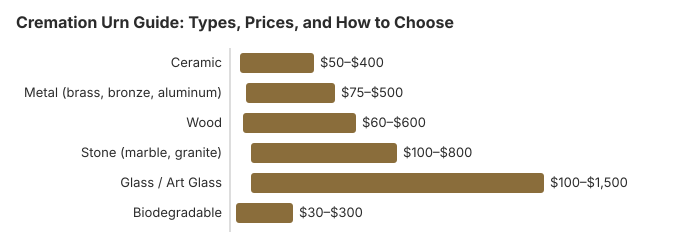

Cremation Urn Guide: Types, Prices, and How to Choose
Choosing an urn for a loved one is a deeply personal decision, and one that many families face without much guidance. Unlike caskets, which are selected at the funeral home under time pressure, urns can be chosen thoughtfully and at your own pace. This guide is designed to help you understand your options, compare prices honestly, and find an urn that feels like a fitting tribute -- whether your budget is $50 or $500. There is no wrong choice here. What matters is that it feels right to you and your family.
Urn Price Overview
Cremation urns span a wide price range, and the good news is that beautiful, dignified options are available at every budget level. A simple but attractive urn can be purchased online for as little as $30 to $50. The average urn purchased from an online retailer costs approximately $150 to $250. Funeral homes typically charge more -- $200 to $500 for comparable styles -- due to their markup. Premium handcrafted, custom, or artisan urns can run $500 to $2,000 or more.
Unlike caskets, urns are an area where shopping outside the funeral home is easy and widely accepted. Since the urn is not needed immediately -- your loved one's remains will be returned in a temporary container -- you have time to browse, compare, and find something meaningful without the pressure of an immediate deadline.
Types of Cremation Urns
Understanding the different types of urns can help you narrow your search. Each type serves a specific purpose and suits different plans for your loved one's remains.
Standard Adult Urns
The most common type, designed to hold the complete cremated remains of one adult. Standard adult urns hold approximately 200 to 220 cubic inches and come in every material, style, and price range. These are the right choice if you plan to keep the urn at home, display it in a columbarium niche, or bury it in a cemetery.
- Typical capacity: 200 – 220 cubic inches
- Price range: $50 – $2,000+
- Best for: Home display, columbarium placement, urn burial
Companion Urns (Double Urns)
Companion urns hold the remains of two people, typically spouses or life partners who wish to rest together. They are roughly twice the volume of a standard urn, usually 400 to 500 cubic inches. Many feature an internal divider to keep the remains separate while sharing a single vessel.
- Typical capacity: 400 – 500 cubic inches
- Price range: $150 – $800
- Best for: Couples, partners, or close family members who wish to be together
Keepsake Urns
Small urns designed to hold a token portion of cremated remains. Families often purchase several keepsake urns to share among family members, with the majority of remains placed in a standard urn, scattered, or buried.
- Typical capacity: 1 – 50 cubic inches
- Price range: $20 – $150
- Best for: Dividing remains among family members, memorial tokens
Biodegradable Urns
Made from natural materials that break down over time, biodegradable urns are designed for earth burial or water scattering. They are an ideal choice for families who want an eco-friendly option or plan to return their loved one to nature.
- Earth burial urns: Made from materials like recycled paper, sand, or natural fibers. They decompose in soil over months to years. ($50 – $300)
- Water scattering urns: Made from salt, sand, or plant-based materials that dissolve in water within minutes to hours. ($50 – $200)
- Tree pod urns: Designed to hold cremated remains with soil and a tree seed or seedling, allowing a tree to grow as a living memorial. ($80 – $300)
Scattering Urns
Specifically designed for families who plan to scatter cremated remains at a meaningful location. These urns feature a special opening mechanism -- often a top lid, tube design, or perforated bottom -- that allows for controlled, dignified scattering. They are typically used once and then recycled or composted.
- Price range: $30 – $150
- Best for: Scattering ceremonies at a meaningful location
Materials Comparison
The material of an urn affects its appearance, weight, durability, and price. Here is how the most common materials compare:
| Material | Price Range | Weight | Best For | Notes |
|---|---|---|---|---|
| Ceramic | $50 – $400 | Light to moderate | Home display, artistic expression | Fragile; wide range of artistic styles; can be hand-painted |
| Metal (brass, bronze, aluminum) | $75 – $500 | Moderate to heavy | Long-term display, columbarium, burial | Durable; easy to engrave; classic appearance |
| Wood | $60 – $600 | Light to moderate | Home display, natural aesthetic | Warm and natural; popular for hand-carved designs |
| Stone (marble, granite) | $100 – $800 | Heavy | Columbarium, burial, permanent display | Very durable; substantial feel; engravable |
| Glass / Art Glass | $100 – $1,500 | Light to moderate | Home display, art piece | Hand-blown pieces are unique; fragile; visually stunning |
| Biodegradable | $30 – $300 | Very light | Scattering, earth burial, water release | Eco-friendly; designed to break down naturally |

Size Requirements: What to Expect
One of the most common concerns families have is choosing the right size urn. Here is a straightforward guide:
- The general rule: You need approximately one cubic inch of urn capacity for every pound of the person's body weight before cremation. A person who weighed 180 pounds will typically need an urn of about 180 cubic inches.
- Standard adult urns are typically 200 to 220 cubic inches, which accommodates most adults comfortably.
- Oversized urns (300+ cubic inches) are available for larger individuals.
- The cremated remains of an average adult typically weigh 4 to 8 pounds and have a volume of roughly 100 to 200 cubic inches.
If you plan to divide remains between a standard urn and several keepsake urns, keep in mind that you will need a standard urn slightly smaller than usual, since some remains will be set aside. Your funeral director or crematory professional can help you estimate the volume precisely.
What Cremated Remains Look Like
Many families are unsure what to expect. Cremated remains are not "ashes" in the way most people imagine. They are actually processed bone fragments that have a coarse, sandy texture, similar to coarse sand or fine gravel. The color is typically light gray to white. The remains are placed in a sealed plastic bag inside the urn or temporary container.
Personalization Options
Many families find that personalizing an urn transforms it from a simple container into a meaningful tribute. Here are the most common personalization options:
- Engraving ($25 – $75): Name, dates, a short message, or a meaningful symbol can be engraved on metal, stone, or wood urns. This is the most popular and affordable personalization option.
- Photo urns ($75 – $300): Some urns have a built-in frame or surface designed to display a photograph of your loved one. Others can have a photo permanently printed or etched onto the surface.
- Custom shapes and themes ($150 – $1,000+): Urns shaped like a favorite object -- a fishing reel, a book, a sports ball, a musical instrument -- can celebrate what made your loved one unique. Many artisans offer custom work.
- Hand-painted designs ($100 – $500): Artists can paint a scene, a favorite view, or a design that was meaningful to your loved one directly onto the urn.
- DIY personalization: Many families choose to buy a simple urn and personalize it themselves with paint, decoupage, fabric, stickers, or other craft materials. This can be a healing family activity, especially for children who want to participate in memorializing a grandparent or other loved one.
Cremation Jewelry
Another deeply personal option is cremation jewelry, which holds a tiny amount of cremated remains in a pendant, ring, bracelet, or other wearable piece. Prices range from $30 for simple stainless steel pendants to $500 or more for gold or sterling silver pieces with gemstones. This allows family members to carry a physical connection to their loved one throughout the day.
Where to Buy an Urn
You have several options for purchasing an urn, and taking time to compare can save money while also helping you find something that truly resonates.
Funeral Home
- Typical price range: $200 – $500 for a standard urn
- Advantages: Convenient, immediate availability, can see and touch the urn
- Drawbacks: Limited selection, highest prices, markup of 200 to 400 percent
Online Retailers
- Typical price range: $30 – $300 for most styles
- Advantages: Enormous selection, transparent pricing, customer reviews, no pressure, delivered to your door
- Drawbacks: Cannot see in person before buying (though return policies help), need to wait for shipping
- Popular options: Urns Northwest, OneWorld Memorials, Amazon, Etsy (for handcrafted options)
Artisans and Craft Markets
- Typical price range: $100 – $1,500+ for handcrafted pieces
- Advantages: Unique, one-of-a-kind creations; personal relationship with the maker; custom options
- Drawbacks: Higher cost for custom work, longer lead times
DIY or Repurposed Containers
- Cost: $0 – $100
- Advantages: Deeply meaningful, very affordable, allows creative expression
- Drawbacks: Must ensure adequate size and a secure closure
What to Expect After Cremation
If you have not yet chosen an urn at the time of cremation, there is no need to worry. The crematory will return your loved one's remains in a sturdy temporary container, usually a simple plastic box or cardboard container inside a velvet bag. This container is perfectly suitable for keeping remains at home while you take time to select an urn.
When you are ready to transfer remains to your chosen urn, you can do this yourself at home. Work over a table covered with a cloth or paper. Simply open the urn, place the bag inside (or pour the remains directly if you prefer), and close it securely. Many families find this to be a quiet, meaningful moment. If you would rather have help, your funeral director can assist with the transfer.
For families planning to scatter remains, you do not necessarily need a permanent urn at all. A scattering urn or even the temporary container can be used for the ceremony.
Frequently Asked Questions
What size urn do I need for an adult?
The general guideline is one cubic inch of urn capacity for every pound of the person's body weight before cremation. For most adults, a standard urn of 200 to 220 cubic inches is sufficient. An average adult produces approximately 100 to 200 cubic inches of cremated remains. If you are unsure, a 200 cubic inch urn accommodates most adults comfortably. Your funeral director or crematory can provide a more specific estimate.
Do I have to buy an urn from the funeral home?
No. Just like caskets, you are free to purchase an urn from any retailer. Funeral homes typically mark up urns significantly, sometimes 200 to 400 percent above wholesale cost. Online retailers, craft artisans, and even general retailers offer a much wider selection at lower prices. The funeral home will return your loved one's remains in a temporary container if you have not yet chosen an urn.
What is the average cost of a cremation urn?
The average urn costs approximately $150 to $250 when purchased online. Funeral home prices are typically higher, ranging from $200 to $500 for comparable styles. Budget-friendly urns start around $30 to $50, while premium handcrafted or custom urns can cost $500 to $2,000 or more. The wide price range means you can find something beautiful and meaningful at almost any budget.
Can I use any container as an urn?
Yes. There is no legal requirement to use a commercially manufactured urn. Any container that is large enough to hold the cremated remains can serve as an urn. Some families use a decorative box, a ceramic vase, a hand-carved wooden container, or even a favorite cookie jar or fishing tackle box. The only practical requirement is that the container can hold approximately 200 cubic inches of remains for an average adult and can be sealed or closed securely.
What is a companion urn?
A companion urn, also called a double urn, is designed to hold the cremated remains of two people, typically a married couple or life partners. These urns are usually 400 to 500 cubic inches in capacity, roughly double the size of a standard adult urn. Companion urns range from $150 to $800 and can be a meaningful way to keep two loved ones together. Some feature a divider to keep the remains separate within the same urn.
What is a keepsake urn?
A keepsake urn is a small urn designed to hold a small portion of cremated remains. Families often use keepsake urns when they want to divide remains among several family members, each keeping a small token amount. Keepsake urns typically hold 1 to 50 cubic inches and range from $20 to $150. They come in many styles, from miniature versions of full-size urns to jewelry pendants, small sculptures, and glass art pieces.
Are biodegradable urns suitable for water scattering?
Yes. Biodegradable urns designed specifically for water scattering are made from materials like sand, salt, or plant-based compounds that dissolve in water within minutes to hours. These urns typically cost between $50 and $200. Some float briefly before sinking and dissolving, giving the family a moment to say goodbye. If you plan to scatter at sea, the EPA requires that scattering take place at least 3 nautical miles from shore.
Can I personalize or engrave an urn?
Yes. Many urns can be personalized with engraving, custom artwork, photographs, or other meaningful details. Metal and stone urns are the easiest to engrave, typically costing $25 to $75 for basic text engraving. Photo urns, hand-painted designs, and custom shapes are also available. Some families choose to decorate a simpler urn themselves with paint, decoupage, or other crafts, creating a truly one-of-a-kind memorial.
Resources That May Help
- Funeral Consumers AllianceIndependent consumer advocacy for funeral rights and fair pricing
- Parting.comCompare funeral home and cremation prices in your area
- Cremation vs. Burial Cost GuideUnderstand the full cost picture for cremation and burial
- Cremation Jewelry GuideExplore wearable memorials and keepsake options
Disclaimer: Information only, not professional advice. Full disclaimer.